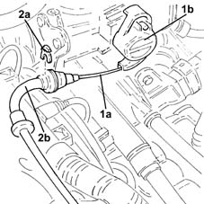
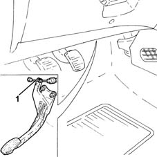

1068A30 accelerator control cable - r + r
- Path
- Procedures > 10 ENGINE > 1068 ACCELERATOR CONTROLS > 1068A accelerator pedal control > 1068A30 accelerator control cable - r + r
- Kind
- repair procedure (removal / refitting; the operation number is the code)
- Applies to
- engines: 1.2 8v; all production periods
- Interactive page
- https://sloeber94.github.io/elrnDB-lYpsln/en/#/2428933
Applies to: engines: 1.2 8v; all production periods
 Removing
Removing
 Refitting
RefittingProceed with removal 1048A10 air cleaner filtering element - replace .
1. Disconnect the accelerator cable (1a) from the throttle valve control (1b).
2. Remove the clip (2a) and release accelerator cable from bracket (2b).

Applies to: engines: 1.2 8v; all production periods
1. Disconnect the accelerator cable from the pedal.
Remove the accelerator cable, disconnecting it from the rubber cable duct on the bulkhead and from the mounting bracket.

Applies to: engines: 1.2 8v; all production periods
Refitting
RemovingRefit the accelerator cable by passing through the bulkhead rubber fitting and fitting to the bracket.
Connect the accelerator cable to the pedal.
Fix the accelerator cable to the mounting bracket using the clip.
Connect the accelerator cable to the throttle valve.
Proceed with refitting 1068A10 accelerator pedal control - check, adjust if necessary and lubricate .
Proceed with refitting 1048A10 air cleaner filtering element - replace .